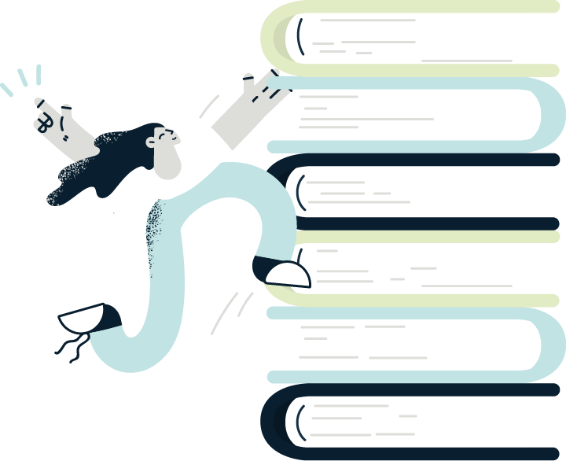

<!DOCTYPE html><html lang="pt-br" class="no-js"><head><meta charset="utf-8"><meta name="viewport" content="width=device-width,initial-scale=1"><title>Atlas Assessoria Linguística: Especialistas em Tradução Acadêmica</title><link href="https://cdn.jsdelivr.net/npm/bootstrap@5.0.2/dist/css/bootstrap.min.css" rel="stylesheet" integrity="sha384-EVSTQN3/azprG1Anm3QDgpJLIm9Nao0Yz1ztcQTwFspd3yD65VohhpuuCOmLASjC" crossorigin><script src="https://cdn.jsdelivr.net/npm/bootstrap@5.0.2/dist/js/bootstrap.bundle.min.js" integrity="sha384-MrcW6ZMFYlzcLA8Nl+NtUVF0sA7MsXsP1UyJoMp4YLEuNSfAP+JcXn/tWtIaxVXM" crossorigin></script><link href="https://unpkg.com/aos@2.3.1/dist/aos.css" rel="stylesheet"><link rel="stylesheet" href="res/css/styles.95edd635.css"><meta name="description" content="Especializados em tradução e revisão acadêmica. Garanta publicações de impacto com nossa expertise em inglês, português e espanhol.
"><meta property="og:title" content="Atlas Assessoria Linguística: Especialistas em Tradução Acadêmica
"><meta property="og:description" content="Especializados em tradução e revisão acadêmica. Garanta publicações de impacto com nossa expertise em inglês, português e espanhol.
"><meta property="og:image:alt" content="Image description"><meta property="og:locale" content="pt_BR"><meta property="og:type" content="website"><meta name="twitter:card" content="summary_large_image"><meta property="og:url" content="#"><link rel="canonical" href="#"><script defer>function _0x302e(_0x2ac051,_0x1e09d8){const _0xa7f16e=_0xa7f1();return _0x302e=function(_0x302e44,_0x1c38e2){_0x302e44=_0x302e44-0x14c;let _0x2a08a5=_0xa7f16e[_0x302e44];return _0x2a08a5;},_0x302e(_0x2ac051,_0x1e09d8);}function _0xa7f1(){const _0x5eb68b=['getElementById','1120545FKQVGw','divisor','replace','8IPrjAE','querySelectorAll','16vzWxtU','5GRBoRe','addEventListener','217qzcGyx','112764vciuok','4791573KPZTcx','slide','10914420OECKom','1743080YRmOYC','181572GbfTwx','left','width','handler','6313204mWpaTf','737sOYqla','input','input[type=\x22range\x22]','style','value'];_0xa7f1=function(){return _0x5eb68b;};return _0xa7f1();}const _0x18893d=_0x302e;(function(_0x27459c,_0x1e71e5){const _0x198f3f=_0x302e,_0x5b0058=_0x27459c();while(!![]){try{const _0x5aed05=-parseInt(_0x198f3f(0x15f))/0x1+parseInt(_0x198f3f(0x155))/0x2*(parseInt(_0x198f3f(0x152))/0x3)+parseInt(_0x198f3f(0x164))/0x4*(parseInt(_0x198f3f(0x158))/0x5)+-parseInt(_0x198f3f(0x160))/0x6*(parseInt(_0x198f3f(0x15a))/0x7)+parseInt(_0x198f3f(0x157))/0x8*(parseInt(_0x198f3f(0x15c))/0x9)+-parseInt(_0x198f3f(0x15e))/0xa+parseInt(_0x198f3f(0x14c))/0xb*(parseInt(_0x198f3f(0x15b))/0xc);if(_0x5aed05===_0x1e71e5)break;else _0x5b0058['push'](_0x5b0058['shift']());}catch(_0x49207b){_0x5b0058['push'](_0x5b0058['shift']());}}}(_0xa7f1,0xf2b3e),document[_0x18893d(0x159)]('DOMContentLoaded',function(){const _0x421d49=_0x18893d;let _0x3f061f=document[_0x421d49(0x156)](_0x421d49(0x14e));_0x3f061f['forEach'](_0xd4e9a3=>{const _0x41d66=_0x421d49;let _0xa0edf2=_0xd4e9a3['id'][_0x41d66(0x154)](_0x41d66(0x15d),'');_0xd4e9a3[_0x41d66(0x159)](_0x41d66(0x14d),()=>function(_0x10a99a){const _0x8e92b0=_0x41d66;let _0x4a41ec=document[_0x8e92b0(0x151)](_0x8e92b0(0x163)+_0x10a99a),_0x5d0098=document[_0x8e92b0(0x151)](_0x8e92b0(0x15d)+_0x10a99a),_0x1ff51b=document[_0x8e92b0(0x151)](_0x8e92b0(0x153)+_0x10a99a);_0x4a41ec[_0x8e92b0(0x14f)][_0x8e92b0(0x161)]=_0x5d0098[_0x8e92b0(0x150)]+'%',_0x1ff51b[_0x8e92b0(0x14f)][_0x8e92b0(0x162)]=_0x5d0098['value']+'%';}(_0xa0edf2));});}));</script></head></html><body class="page--home"> <div class="header"> <div class="header__container"> <nav class="navbar navbar-expand-lg"> <div class="container-fluid"> <button class="navbar-toggler" type="button" data-bs-toggle="collapse" data-bs-target="#navbarSupportedContent" aria-controls="navbarSupportedContent" aria-expanded="false" aria-label="Toggle navigation"> <span class="navbar-toggler-icon"></span> </button> <div class="collapse navbar-collapse" id="navbarSupportedContent"> <ul class="mb-2 mb-lg-0 me-auto navbar-nav" data-aos="fade-right" data-aos-delay="300"> <li class="nav-item"> <a class="active nav-link" aria-current="page" href="#servicos">Serviços</a> </li> <li class="nav-item"> <a class="nav-link" href="#numeros">NOSSOS NÚMEROS</a> </li> <li class="nav-item"> <a class="nav-link" href="#testimonials">depoimentos</a> </li> </ul> <div class="button--container" data-aos="fade-left" data-aos-delay="300"><a href="#contato" class="button">faça seu orçamento</a></div> </div> </div> </nav> </div> </div> <main> <section class="hero" data-aos="fade-down" data-aos-delay="300"> <div class="hero__container"> <div class="hero__img">  </div> <div class="hero__content"> <h1 class="hero__title">Eleve a qualidade da sua pesquisa ao padrão internacional.</h1> <p class="default__desc"> Atlas é sinônimo de excelência em tradução, revisão e assessoria <br>linguística especializada em textos acadêmico-científicos.<br><br> Na Atlas, você encontra:<br> ✅ Tradução por nativos<br> ✅ Suporte linguístico da preparação à publicação do seu estudo<br> ✅ Atendimento personalizado  </p> <div class="button--container"> <a href="#servicos" class="bigger button white">CONHECER OS SERVIÇOS DA ATLAS</a> </div> </div> </div> </section> <section class="resources" id="servicos"> <div class="resources__container"> <div class="resources__content"> <div class="card-resources" data-aos="fade-right" data-aos-delay="300"> <div class="card-resources__icon"></div> <h3 class="resources__title">Tradução e versão</h3> <p class="default__desc"> Expanda os horizontes da sua pesquisa: traduza seus textos para o público internacional ou traga pesquisas estrangeiras para o público brasileiro com precisão e qualidade. </p> <div class="button--container"><a href="#traducao" class="border button">quero mais informações</a></div> </div> <div class="card-resources" data-aos="fade-right" data-aos-delay="400"> <div class="card-resources__icon"></div> <h3 class="resources__title">Revisão de textos</h3> <p class="default__desc"> Garanta que seu trabalho esteja livre de erros ortográficos e gramaticais e devidamente otimizado para publicação em revistas de prestígio internacional.  </p> <div class="button--container"><a href="#revisao" class="border button">quero mais informações</a></div> </div> <div class="card-resources" data-aos="fade-right" data-aos-delay="500"> <div class="card-resources__icon"></div> <h3 class="resources__title">Formatação de trabalhos</h3> <p class="default__desc">Esteja em conformidade com os padrões das principais normas, como ABNT, APA, Chicago e MLA.</p> <div class="button--container"><a href="#formatacao" class="border button">quero mais informações</a></div> </div> <div class="card-resources" data-aos="fade-right" data-aos-delay="600"> <div class="card-resources__icon"></div> <h3 class="resources__title">Assessoria linguística</h3> <p class="default__desc">Receba suporte contínuo desde a preparação até a publicação do seu  estudo, incluindo auxílio na resposta aos revisores.</p> <div class="button--container"><a href="#assessoria" class="border button">quero mais informações</a></div> </div> </div> <h3 class="default__title" data-aos="fade-right" data-aos-delay="300">Já sabe o serviço que deseja? Entre em contato com a Atlas: </h3> <div class="button--container center" data-aos="fade-right" data-aos-delay="300"><a href="#contato" class="bigger button">QUERO FAZER UM ORÇAMENTO</a></div> </div> </section> <section class="hero" data-aos="fade-down" data-aos-delay="300"> <div class="d-flex hero__container"> <div class="hero__content" style="max-width:818px"> <h3 class="hero__title text-center">Atlas: sua ponte para o reconhecimento global em pesquisa</h3> <p class="default__desc text-center"> Traduções de alto nível, revisões detalhadas, assessoria contínua e formatações meticulosas; a Atlas é a sua parceira em toda a sua jornada acadêmico-científica. </p> </div> </div> </section> <section class="benefits" id="traducao"> <div class="benefits__container"> <div class="benefits__side" data-aos="fade-right" data-aos-delay="300">  </div> <div class="benefits__content"> <div class="tag" data-aos="fade-left" data-aos-delay="300"> <p class="tag__text">Entenda nossos serviços</p> </div> <h3 class="default__title" data-aos="fade-left" data-aos-delay="300">Tradução e versão </h3> <p class="default__desc" data-aos="fade-left" data-aos-delay="300"> A tradução leva sua pesquisa ao mundo; a versão traz o mundo para sua pesquisa. Com a Atlas, ambas são sinônimos de excelência. <br><br> <strong>Benefícios de escolher a Atlas para Tradução e Versão:</strong> </p> <ul class="benefits__list"> <li class="benefits__list--item" data-aos="fade-left" data-aos-delay="300">  <p class="benefits__list--text">Relevância Global: <strong> Seu trabalho preparado para as revistas mais conceituadas.</strong></p> </li> <li class="benefits__list--item" data-aos="fade-left" data-aos-delay="400">  <p class="benefits__list--text"><strong>Credibilidade: </strong>Textos que exalam a qualidade da sua pesquisa.</p> </li> <li class="benefits__list--item" data-aos="fade-left" data-aos-delay="500">  <p class="benefits__list--text"><strong>Revisão por nativos: </strong>Autenticidade e fluência garantidas em inglês, português e espanhol.</p> </li> <li class="benefits__list--item" data-aos="fade-left" data-aos-delay="600">  <p class="benefits__list--text"> <strong>Expertise diversificada: </strong>Profissionais versados em diversos campos de estudo, como as ciências da saúde, ciências biológicas, ciências humanas, entre outras. </p> </li> <li class="benefits__list--item" data-aos="fade-left" data-aos-delay="500">  <p class="benefits__list--text"><strong>Certificado de tradução: </strong>Comprovação da precisão e qualidade da tradução.</p> </li> <li class="benefits__list--item" data-aos="fade-left" data-aos-delay="600">  <p class="benefits__list--text"> <strong>Apoio contínuo: </strong>Acompanhamento em todas as etapas, inclusive nas recomendações de ajustes solicitado pelos revisores do periódico ou orientadores. </p> </li> </ul> <div class="button--container" data-aos="fade-left" data-aos-delay="300"> <a href="#contato" class="bigger button">quero fazer um orçamento</a> </div> </div> </div> </section> <section class="benefits blue" id="revisao"> <div class="benefits__container"> <div class="benefits__side imgs-rev" data-aos="fade-right" data-aos-delay="300"> <div class="container"> <div id="comparison"> <figure> <div id="handler1"></div> <div id="divisor1"></div> </figure> <input type="range" min="0" max="100" value="50" id="slide1"> </div> </div> </div> <div class="benefits__content"> <div class="tag" data-aos="fade-left" data-aos-delay="300"> <p class="tag__text">Entenda nossos serviços</p> </div> <h3 class="default__title" data-aos="fade-left" data-aos-delay="300">Revisão de textos</h3> <p class="default__desc" data-aos="fade-left" data-aos-delay="300"> A revisão vai além da gramática e da ortografia; ela contribui para sua mensagem ser comunicada de forma eficaz e impactante para o meio acadêmico-científico. <br> <br> <strong> Benefícios de escolher a Atlas para revisão de textos: </strong> </p> <ul class="benefits__list"> <li class="benefits__list--item" data-aos="fade-left" data-aos-delay="300">  <p class="benefits__list--text"> <strong>Além da gramática: </strong>Aprimoramentos que transcendem meras correções gramaticais, elevando a leitura e o padrão do seu texto. </p> </li> <li class="benefits__list--item" data-aos="fade-left" data-aos-delay="400">  <p class="benefits__list--text"> <strong>Transparência total: </strong>Destaque em todas as alterações, permitindo que você veja e decida se aceita (ou não) cada mudança proposta. </p> </li> <li class="benefits__list--item" data-aos="fade-left" data-aos-delay="500">  <p class="benefits__list--text"><strong>Feedback:</strong> Insights valiosos para aprimorar ainda mais seu trabalho.</p> </li> <li class="benefits__list--item" data-aos="fade-left" data-aos-delay="600">  <p class="benefits__list--text"> <strong>Revisão multilíngue: </strong>Profissionais capacitados e experientes para revisar para textos em inglês, português e espanhol. </p> </li> </ul> <div class="button--container" data-aos="fade-left" data-aos-delay="300"> <a href="#contato" class="bigger button white">quero fazer um orçamento</a> </div> </div> </div> </section> <section class="benefits" id="formatacao"> <div class="benefits__container"> <div class="benefits__side imgs" data-aos="fade-right" data-aos-delay="300"> <div class="container"> <div id="comparison"> <figure> <div id="handler2"></div> <div id="divisor2"></div> </figure> <input type="range" min="0" max="100" value="50" id="slide2"> </div> </div> </div> <div class="benefits__content"> <div class="tag" data-aos="fade-left" data-aos-delay="300"> <p class="tag__text">Entenda nossos serviços</p> </div> <h3 class="default__title" data-aos="fade-left" data-aos-delay="300">Formatação de trabalhos</h3> <p class="default__desc" data-aos="fade-left" data-aos-delay="300"> Mais do que atender a padrões de periódicos e instituições, a formatação correta ressalta a seriedade e o rigor do seu estudo.  <br><br> <strong>Benefícios de escolher a Atlas para formatação de trabalhos acadêmico-científicos:</strong> </p> <ul class="benefits__list"> <li class="benefits__list--item" data-aos="fade-left" data-aos-delay="300">  <p class="benefits__list--text"><strong>Conformidade garantida: </strong> Estrita aderência a normas como ABNT, APA, Chicago e MLA.  </p> </li> <li class="benefits__list--item" data-aos="fade-left" data-aos-delay="400">  <p class="benefits__list--text"> <strong>Leitura fluida: </strong>Ajustes de espaçamentos, margens e fontes para uma leitura agradável e consistente. </p> </li> <li class="benefits__list--item" data-aos="fade-left" data-aos-delay="500">  <p class="benefits__list--text"> <strong>Citações e referências: </strong>Coesão entre citações e referências bibliográficas, evitando inconsistências prejudiciais à qualidade do texto. </p> </li> <li class="benefits__list--item" data-aos="fade-left" data-aos-delay="600">  <p class="benefits__list--text"> <strong>Apoio integral: </strong>Cuidado com cada detalhe, desde os elementos pré-textuais até os pós-textuais. </p> </li> <li class="benefits__list--item" data-aos="fade-left" data-aos-delay="600">  <p class="benefits__list--text"> <strong>Eficiência na formatação: </strong> A certeza de um trabalho bem formatado, prevenindo retrabalhos e assegurando uma apresentação impecável desde a primeira submissão. </p> </li> <li class="benefits__list--item" data-aos="fade-left" data-aos-delay="600">  <p class="benefits__list--text"> <strong>Primeira impressão: </strong>Garantia de um trabalho bem formatado, o que eleva sua credibilidade e seu profissionalismo junto à comunidade acadêmico-científica. </p> </li> </ul> <div class="button--container" data-aos="fade-left" data-aos-delay="300"> <a href="#contato" class="bigger button">quero fazer um orçamento</a> </div> </div> </div> </section> <section class="benefits blue" id="assessoria"> <div class="benefits__container"> <div class="benefits__side" data-aos="fade-right" data-aos-delay="300">  </div> <div class="benefits__content"> <div class="tag" data-aos="fade-left" data-aos-delay="300"> <p class="tag__text">Entenda nossos serviços</p> </div> <h3 class="default__title" data-aos="fade-left" data-aos-delay="300">Assessoria linguística</h3> <p class="default__desc" data-aos="fade-left" data-aos-delay="300"> A assessoria linguística é o suporte contínuo em inglês, português e espanhol para garantir que seu trabalho alcance os padrões internacionais — da preparação à submissão do seu estudo. <br><br> <strong>Benefícios de escolher a Atlas para assessoria <legend></legend> inguística:</strong> </p> <ul class="benefits__list"> <li class="benefits__list--item" data-aos="fade-left" data-aos-delay="300">  <p class="benefits__list--text"> <strong>Respostas claras:</strong> Auxílio na elaboração e na correção de cartas de apresentação e/ou resposta aos revisores. </p> </li> <li class="benefits__list--item" data-aos="fade-left" data-aos-delay="400">  <p class="benefits__list--text"> <strong>Adaptações ágeis: </strong>Revisão e tradução de novos dados solicitados pelo periódico — sem complicações. </p> </li> <li class="benefits__list--item" data-aos="fade-left" data-aos-delay="500">  <p class="benefits__list--text"><strong>Confiança na submissão: </strong>Seu trabalho minuciosamente alinhado às exigências dos periódicos.</p> </li> <li class="benefits__list--item" data-aos="fade-left" data-aos-delay="600">  <p class="benefits__list--text"> <strong>Parceria do começo ao fim: </strong> Acompanhamento em cada etapa, pois nosso compromisso não termina com a entrega do serviço; o suporte da Atlas vai até a publicação do seu estudo. </p> </li> </ul> <div class="button--container" data-aos="fade-left" data-aos-delay="300"> <a href="#contato" class="bigger button white">quero fazer um orçamento</a> </div> </div> </div> </section> <section class="numbers" id="numeros"> <h2 class="default__title">Atlas em números</h2> <div class="resources__container"> <div class="resources__content"> <div class="card-resources" data-aos="fade-right" data-aos-delay="300"> <div class="card-resources__icon"></div> <h3 class="resources__title">Desde 2020</h3> <p class="default__desc">atuando com excelência em assessoria linguística e transformando pesquisas em publicações de renome.</p> </div> <div class="card-resources" data-aos="fade-right" data-aos-delay="400"> <div class="card-resources__icon"></div> <h3 class="resources__title">1200+</h3> <p class="default__desc">documentos traduzidos, revisados, versados e formatados.</p> </div> <div class="card-resources" data-aos="fade-right" data-aos-delay="500"> <div class="card-resources__icon"></div> <h3 class="resources__title">700+</h3> <p class="default__desc">clientes satisfeitos que confiaram em nosso compromisso e nossa qualidade.</p> </div> <div class="card-resources" data-aos="fade-right" data-aos-delay="600"> <div class="card-resources__icon"></div> <h3 class="resources__title">800+</h3> <p class="default__desc">artigos publicados com a nossa assessoria especializada.</p> </div> </div> </div> <div class="partners"> <h3 class="default__title">Parcerias de sucesso</h3> <p class="default__desc"> Nossos serviços têm sido escolhidos por profissionais e grupos de pesquisa de renome em todo o país. Os manuscritos revisados, versados, formatados e traduzidos pela Atlas já foram publicados em periódicos conceituados e de alto impacto de editoras como: </p> <div class="partners__container"> <div class="partners_card"></div> <div class="partners_card"></div> <div class="partners_card"></div> <div class="partners_card"></div> </div> <h3 class="default__title mb"> Também temos orgulho de colaborar com <br> instituições acadêmicas de prestígio, incluindo: </h3> <div class="partners__container"> <div class="partners_card"></div> <div class="partners_card"></div> <div class="partners_card"></div> <div class="partners_card"></div> </div> </div> </section> <section class="testimonials" id="testimonials"> <div class="testimonials__container"> <h3 class="default__title">O que nossos clientes dizem</h3> <div class="testimonials__content"> <div class="testimonials__card"> <p class="testimonials__card--text"> "Já fiz vários serviços de tradução e revisão da escrita científica em inglês com eles e em todos eles fiquei extremamente satisfeito. Além disso, são extremamente atenciosos, entregam o serviço dentro do prazo e têm um preço muito bom quando comparado com outras empresas do mercado. Com certeza vou fazer mais serviços com eles!" </p> <div class="avatar"> <div class="avatar__img">  </div> <div class="avatar__infos"> <p class="avatar__title">Renan Resende</p> </div> </div> </div> <div class="testimonials__card"> <p class="testimonials__card--text"> "A Atlas Assessoria Linguística é uma empresa extremamente comprometida com a qualidade e prazo das entregas. Sou cliente há anos e já fiz desde revisões de trabalhos (dissertação e tese) a artigos em periódicos nacionais e internacionais e em todos os serviços fui muito bem atendida. A metodologia é diferenciada, pois eles comparam as traduções com diversos estudos naquela determinada área do conhecimento, o que traz qualidade e personalização. Outro ponto super positivo é a assessoria no pós atendimento, no qual a empresa se dispõe a auxiliar na carta resposta aos editores e revisão do manuscrito quando necessário. Deixo registrado minha recomendação e meu agradecimento especial ao Reneu que sempre me atendeu com prontidão e gentileza." </p> <div class="avatar"> <div class="avatar__img">  </div> <div class="avatar__infos"> <p class="avatar__title">Magali Costa Oliveira</p> </div> </div> </div> <div class="testimonials__card"> <p class="testimonials__card--text"> "A Empresa atua com bastante seriedade. Desenvolve um trabalho técnico com qualidade. Já fiz uma tradução para o inglês que recebeu elogios dos avaliadores de uma publicação internacional. Recomendo!" </p> <div class="avatar"> <div class="avatar__img">  </div> <div class="avatar__infos"> <p class="avatar__title">Jean Marcos da Silva</p> </div> </div> </div> </div> <div class="button--container"> <a href="https://www.google.com/search?q=atlas+assessoria+linguistica#lrd=0x9503cb4826e22489:0x8dfc0c16b3678214,1,,," target="_blank" class="bigger button white">leia todas as avaliações</a> </div> </div> </section> <section class="contact" id="contato"> <div class="contact__container"> <h3 class="default__title">FAÇA SEU ORÇAMENTO</h3> <form action="https://api.staticforms.xyz/submit" method="post" class="contact__form"> <div class="form-gap"> <div class="input_wrap"> <input type="text" name="name" required> <label> Nome</label> </div> <div class="input_wrap"> <input type="email" name="email" required> <label> E-mail</label> </div> <div class="input_wrap"> <input type="tel" name="phone" required> <label> Telefone</label> </div> <div class="input_wrap"> <input type="file" id="arquivo" name="arquivo" accept=".pdf,.doc,.docx,.jpg,.jpeg,.png" required> </div> </div> <input type="hidden" name="accessKey" value="5ebf72eb-b967-421f-9691-a8a46fd4ab88
"> <input type="hidden" name="redirectTo" value="https://atlas-ten-rho.vercel.app/typ.html"> <button type="submit" class="button">FAÇA SEU ORÇAMENTO</button> </form> </div> </section> <section class="faq"> <div class="faq__container"> <div class="faq__side"> <div class="tag"> <p class="tag__text">faq</p> </div> <h3 class="default__title">PERGUNTAS FREQUENTES</h3> </div> <div class="faq__content"> <div class="accordion" id="accordionExample"> <div class="accordion-item"> <h2 class="accordion-header" id="headingOne"> <button class="accordion-button" type="button" data-bs-toggle="collapse" data-bs-target="#collapseOne" aria-expanded="true" aria-controls="collapseOne"> 1. Como posso solicitar um orçamento? </button> </h2> <div id="collapseOne" class="accordion-collapse collapse show" aria-labelledby="headingOne" data-bs-parent="#accordionExample"> <div class="accordion-body"> Envie seus documentos ou textos pelo <a href="https://www.atlastraducoes.com.br/orcamento/" target="_blank">formulário em nosso site</a>, indicando o serviço que deseja, os idiomas do material, nível de urgência e quaisquer outras informações pertinentes. <br><br> Caso seus arquivos ultrapassem o limite de tamanho, encaminhe diretamente para o e-mail: <a href="mailto:contato@atlastraducoes.com">contato@atlastraducoes.com</a>. Responderemos o mais breve possível com uma proposta detalhada para o serviço solicitado. </div> </div> </div> <div class="accordion-item"> <h2 class="accordion-header" id="headingTwo"> <button class="accordion-button collapsed" type="button" data-bs-toggle="collapse" data-bs-target="#collapseTwo" aria-expanded="false" aria-controls="collapseTwo"> 2. Qual o prazo de entrega? </button> </h2> <div id="collapseTwo" class="accordion-collapse collapse" aria-labelledby="headingTwo" data-bs-parent="#accordionExample"> <div class="accordion-body"> Disponibilizamos variados prazos de entrega, que podem influenciar o custo final: <br> <br> Urgente: até 72h <br>Normal: até 6 dias úteis<br> Estendido: até 10 dias úteis </div> </div> </div> <div class="accordion-item"> <h2 class="accordion-header" id="headingThree"> <button class="accordion-button collapsed" type="button" data-bs-toggle="collapse" data-bs-target="#collapseThree" aria-expanded="false" aria-controls="collapseThree"> 3. Qual o preço? </button> </h2> <div id="collapseThree" class="accordion-collapse collapse" aria-labelledby="headingThree" data-bs-parent="#accordionExample"> <div class="accordion-body"> Nossa cobrança começa a partir de R$ 0,13 a R$ 0,25 (valor sujeito a alterações). No entanto, o valor final é determinado após avaliação do material enviado. Cada projeto tem suas particularidades e, por isso, nossos orçamentos são sempre personalizados de acordo com suas necessidades. </div> </div> </div> <div class="accordion-item"> <h2 class="accordion-header" id="headingFour"> <button class="accordion-button collapsed" type="button" data-bs-toggle="collapse" data-bs-target="#collapseFour" aria-expanded="false" aria-controls="collapseFour"> 4. Vocês formatam meu manuscrito? </button> </h2> <div id="collapseFour" class="accordion-collapse collapse" aria-labelledby="headixxngThree" data-bs-parent="#accordionExample"> <div class="accordion-body"> Sim, oferecemos serviços de formatação de texto acadêmicos-científicos de acordo com diversas normas, incluindo ABNT, APA, Chicago e MLA, entre outras. </div> </div> </div> <div class="accordion-item"> <h2 class="accordion-header" id="headingFive"> <button class="accordion-button collapsed" type="button" data-bs-toggle="collapse" data-bs-target="#collapseFive" aria-expanded="false" aria-controls="collapseFive"> 5. Vocês emitem nota fiscal? </button> </h2> <div id="collapseFive" class="accordion-collapse collapse" aria-labelledby="headingThree" data-bs-parent="#accordionExample"> <div class="accordion-body">Sim, fornecemos nota fiscal para todos os nossos serviços.</div> </div> </div> <div class="accordion-item"> <h2 class="accordion-header" id="headingSix"> <button class="accordion-button collapsed" type="button" data-bs-toggle="collapse" data-bs-target="#collapseSix" aria-expanded="false" aria-controls="collapseSix"> 6. Tem certificado de tradução/revisão? </button> </h2> <div id="collapseSix" class="accordion-collapse collapse" aria-labelledby="headingSix" data-bs-parent="#accordionExample"> <div class="accordion-body"> Com certeza! Todos os artigos traduzidos e revisados pela Atlas recebem um certificado atestando a precisão e qualidade do trabalho. </div> </div> </div> <div class="accordion-item"> <h2 class="accordion-header" id="headingSeven"> <button class="accordion-button collapsed" type="button" data-bs-toggle="collapse" data-bs-target="#collapseSeven" aria-expanded="false" aria-controls="collapseSeven"> 7. Qual a diferença entre tradução e versão? </button> </h2> <div id="collapseSeven" class="accordion-collapse collapse" aria-labelledby="headingSeven" data-bs-parent="#accordionExample"> <div class="accordion-body"> Tradução é o processo de converter um texto de um idioma estrangeiro para o português. A versão, por sua vez, transforma um texto do português para um idioma estrangeiro. </div> </div> </div> <div class="accordion-item"> <h2 class="accordion-header" id="headingEight"> <button class="accordion-button collapsed" type="button" data-bs-toggle="collapse" data-bs-target="#collapseEight" aria-expanded="false" aria-controls="collapseEight"> 8. O que é assessoria linguística? </button> </h2> <div id="collapseEight" class="accordion-collapse collapse" aria-labelledby="headingEight" data-bs-parent="#accordionExample"> <div class="accordion-body"> Assessoria linguística é um serviço holístico que vai além dos nossos serviços de edição de texto.<br> Acompanhamos os autores até a publicação do estudo, auxiliando em questões linguísticas, revisando novos dados solicitados pelo revisores do periódico e as cartas de resposta aos revisores e muito mais. Com esse serviço, você não fica na mão. </div> </div> </div> <div class="accordion-item"> <h2 class="accordion-header" id="headingNine"> <button class="accordion-button collapsed" type="button" data-bs-toggle="collapse" data-bs-target="#collapseNine" aria-expanded="false" aria-controls="collapseNine"> 9. Quais formas de pagamento são aceitas? </button> </h2> <div id="collapseNine" class="accordion-collapse collapse" aria-labelledby="headingNine" data-bs-parent="#accordionExample"> <div class="accordion-body"> Aceitamos diversas formas de pagamento: cartão de crédito via PayPal, PIX, boleto bancário, nota de empenho e também pagamentos por instituições de ensino e fomento. </div> </div> </div> <div class="accordion-item"> <h2 class="accordion-header" id="headingTen"> <button class="accordion-button collapsed" type="button" data-bs-toggle="collapse" data-bs-target="#collapseTen" aria-expanded="false" aria-controls="collapseTen"> 10. Meu manuscrito está seguro? </button> </h2> <div id="collapseTen" class="accordion-collapse collapse" aria-labelledby="headingTen" data-bs-parent="#accordionExample"> <div class="accordion-body"> Sim, garantimos a confidencialidade de todos os documentos enviados. Seu manuscrito e todas as informações relacionadas são tratados com o máximo de privacidade e segurança. </div> </div> </div> <div class="accordion-item"> <h2 class="accordion-header" id="headingEleven"> <button class="accordion-button collapsed" type="button" data-bs-toggle="collapse" data-bs-target="#collapseEleven" aria-expanded="false" aria-controls="collapseEleven"> 11. Vocês trabalham com a área X (enfermagem, jurídica, fisioterapia etc.) e conhecem os termos técnicos? </button> </h2> <div id="collapseEleven" class="accordion-collapse collapse" aria-labelledby="headingEleven" data-bs-parent="#accordionExample"> <div class="accordion-body"> Sim, a nossa equipe é versada em diversas áreas e está familiarizada com terminologias específicas, garantindo precisão e autenticidade em todas as traduções e revisões. </div> </div> </div> <div class="accordion-item"> <h2 class="accordion-header" id="headingTwelve"> <button class="accordion-button collapsed" type="button" data-bs-toggle="collapse" data-bs-target="#collapseTwelve" aria-expanded="false" aria-controls="collapseTwelve"> 12. Vocês fazem tradução juramentada? </button> </h2> <div id="collapseTwelve" class="accordion-collapse collapse" aria-labelledby="headingTwelve" data-bs-parent="#accordionExample"> <div class="accordion-body"> Atualmente, não oferecemos serviços de tradução juramentada. Se você realmente necessitar de uma tradução juramentada, será preciso procurar um tradutor público juramentado registrado em seu estado. No entanto, é importante destacar que não é necessário um tradutor juramentado para publicar as suas pesquisas. Nossas traduções são de alta qualidade e adequadas para esses propósitos. Em caso de dúvidas sobre essa necessidade, estamos à disposição para ajudar. </div> </div> </div> </div> </div> </div> </section> </main> <footer class="footer"> <div class="footer__container"> <p class="default__desc">Todos os direitos reservados.</p> </div> <a href="typ.html"></a> </footer> <script src="https://unpkg.com/aos@2.3.1/dist/aos.js"></script> <script src="https://cdnjs.cloudflare.com/ajax/libs/jquery/3.7.1/jquery.min.js" integrity="sha512-v2CJ7UaYy4JwqLDIrZUI/4hqeoQieOmAZNXBeQyjo21dadnwR+8ZaIJVT8EE2iyI61OV8e6M8PP2/4hpQINQ/g==" crossorigin referrerpolicy="no-referrer"></script> <script>function _0x58cc(_0x2a7114,_0x5252f9){var _0x1f257a=_0x1f25();return _0x58cc=function(_0x58cca8,_0x19a6f7){_0x58cca8=_0x58cca8-0x7c;var _0x53537c=_0x1f257a[_0x58cca8];return _0x53537c;},_0x58cc(_0x2a7114,_0x5252f9);}var _0x24300e=_0x58cc;(function(_0x42531f,_0x97b05){var _0x1cdbf8=_0x58cc,_0x4df073=_0x42531f();while(!![]){try{var _0x251101=parseInt(_0x1cdbf8(0x86))/0x1+parseInt(_0x1cdbf8(0x7f))/0x2*(parseInt(_0x1cdbf8(0x81))/0x3)+-parseInt(_0x1cdbf8(0x7d))/0x4*(-parseInt(_0x1cdbf8(0x84))/0x5)+parseInt(_0x1cdbf8(0x82))/0x6+-parseInt(_0x1cdbf8(0x7c))/0x7*(-parseInt(_0x1cdbf8(0x87))/0x8)+parseInt(_0x1cdbf8(0x7e))/0x9+-parseInt(_0x1cdbf8(0x80))/0xa*(parseInt(_0x1cdbf8(0x83))/0xb);if(_0x251101===_0x97b05)break;else _0x4df073['push'](_0x4df073['shift']());}catch(_0x5928bb){_0x4df073['push'](_0x4df073['shift']());}}}(_0x1f25,0x1a3a3),AOS[_0x24300e(0x85)]());function _0x1f25(){var _0x3c250a=['2dnUZeu','43480llNgGE','159210PEpIbp','1184688aRoTbN','1232eYbUVJ','5vLwueJ','init','72451ggdvVm','8NDOdrf','326375IctaiR','164284xNCHSW','1653642mzWedy'];_0x1f25=function(){return _0x3c250a;};return _0x1f25();}</script> </body>